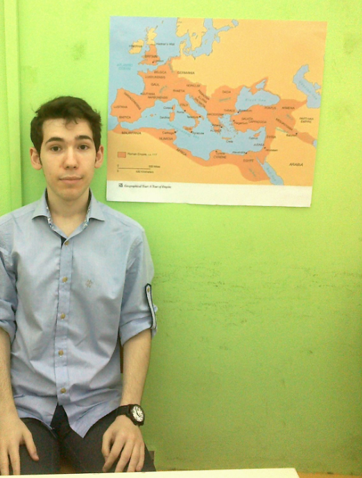
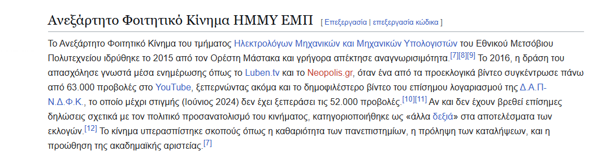
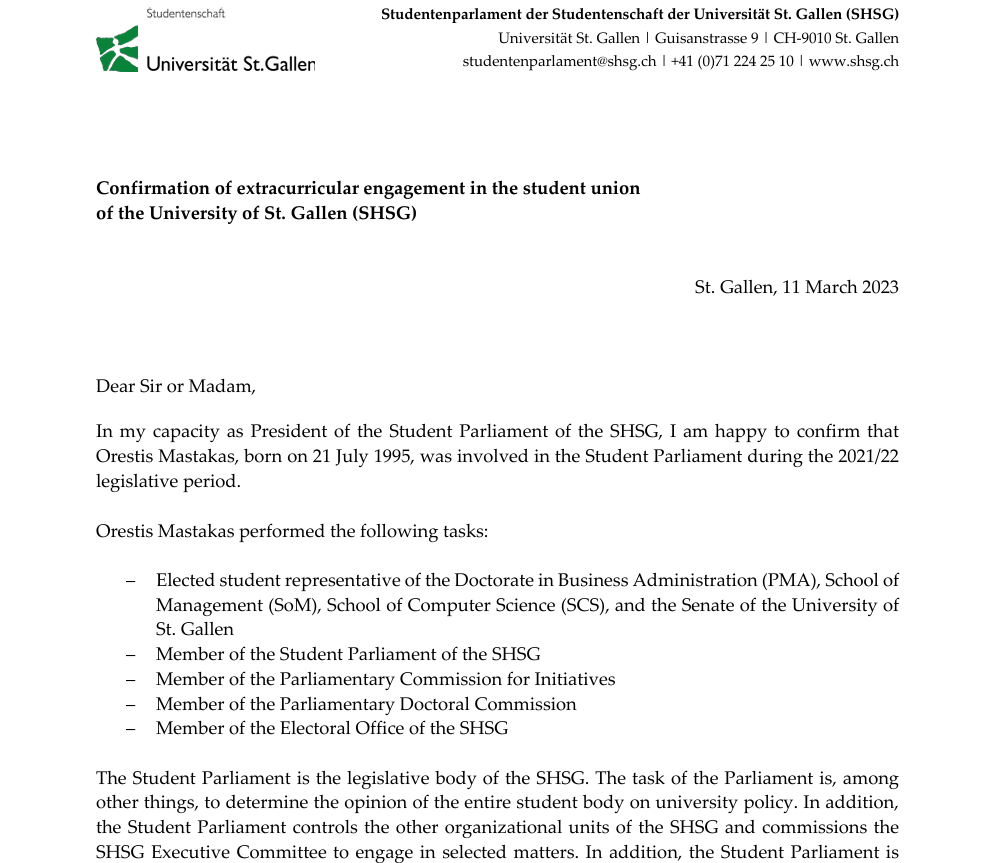
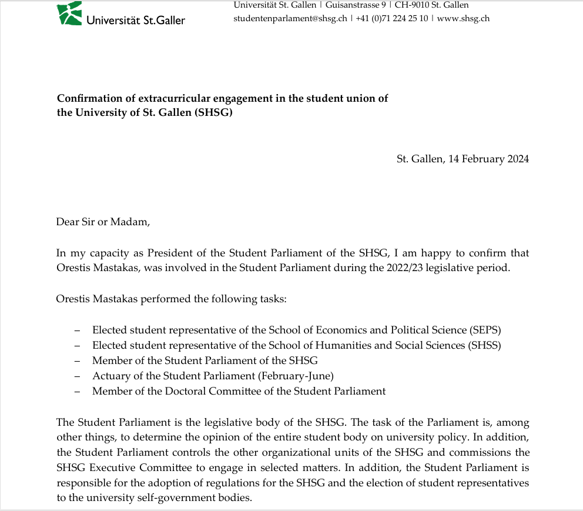
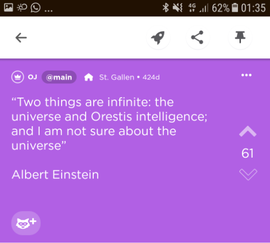
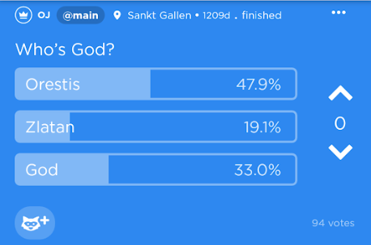
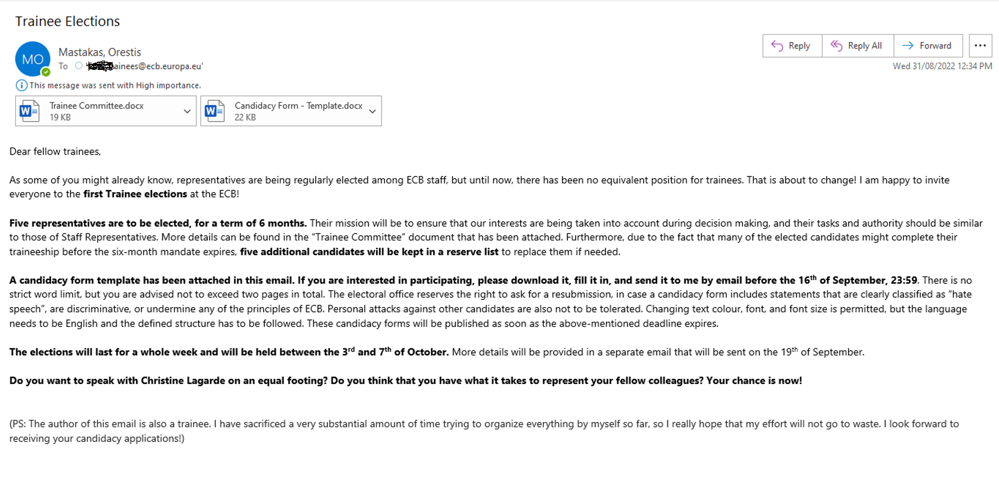
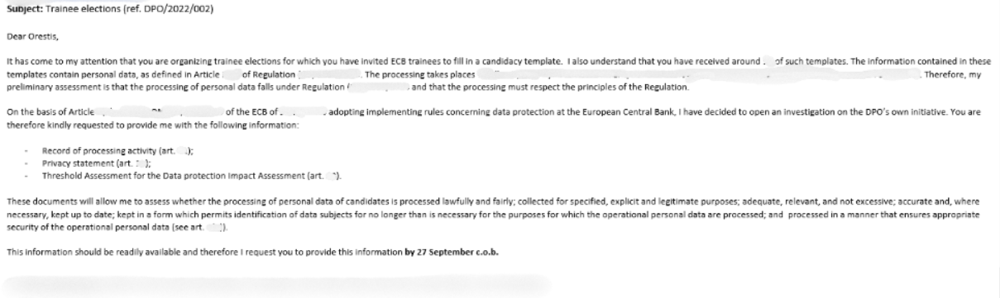
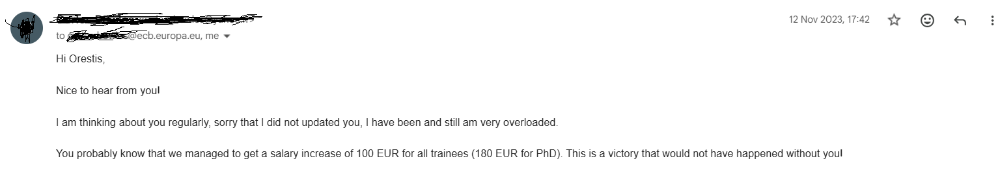

The Royal Archives preserve a modest but growing collection of documents relating to the life and campaigns of Orestis II. The material below has been assembled from newspapers, university publications, institutional records, anonymous student testimony, and other sources of varying reliability. The Royal Chancellery accepts no responsibility for the editorial choices of contemporary journalists.
The earliest surviving records concern the University Independence Campaign and the emergence of the Roman Revival movement.

The University Independence Campaign has also found its way into the historical record through a brief reference in the Greek-language Wikipedia article on independent student movements.

The Swiss period marks a major expansion of the documentary record. Surviving materials suggest an unusually high level of involvement in student governance, institutional politics, and electoral competition, culminating in two of the more unconventional presidential campaigns in recent university memory.
Before the presidential campaigns, Orestis II had already established a broad institutional presence within the Student Union.
Surviving records indicate representative positions across multiple schools and programs, including several with no obvious connection to his formal academic specialization. Court historians remain divided on whether this reflected exceptional popularity, exceptional ambition, or an unusually permissive interpretation of student governance.


The campaign also entered the formal university press. Prisma notably arranged an interview with Orestis II despite the candidate being physically located in Athens.
Opposition to the campaign also became unusually public. Anonymous mass emails circulated objecting to the prospect of a foreign student assuming the presidency, prompting coverage in both regional and national media.
The later stages of the campaign are preserved primarily through posters, screenshots, and anonymous student commentary.


The Frankfurt archive preserves a small but revealing set of internal communications relating to the trainee representation initiative. The surviving correspondence shows how an informal initiative gradually evolved into a matter of institution-wide administrative concern.



The Galatsi archive remains relatively sparse but preserves several useful records from the municipal expedition, including local press coverage and the movement's official policy platform.